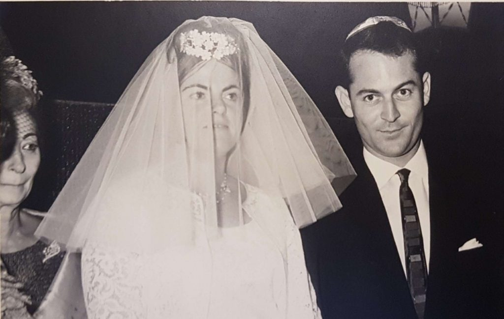
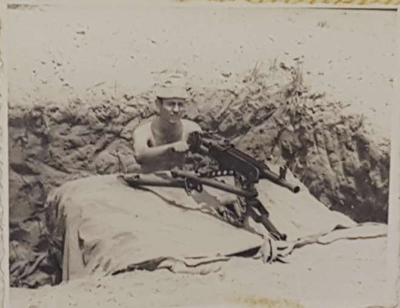
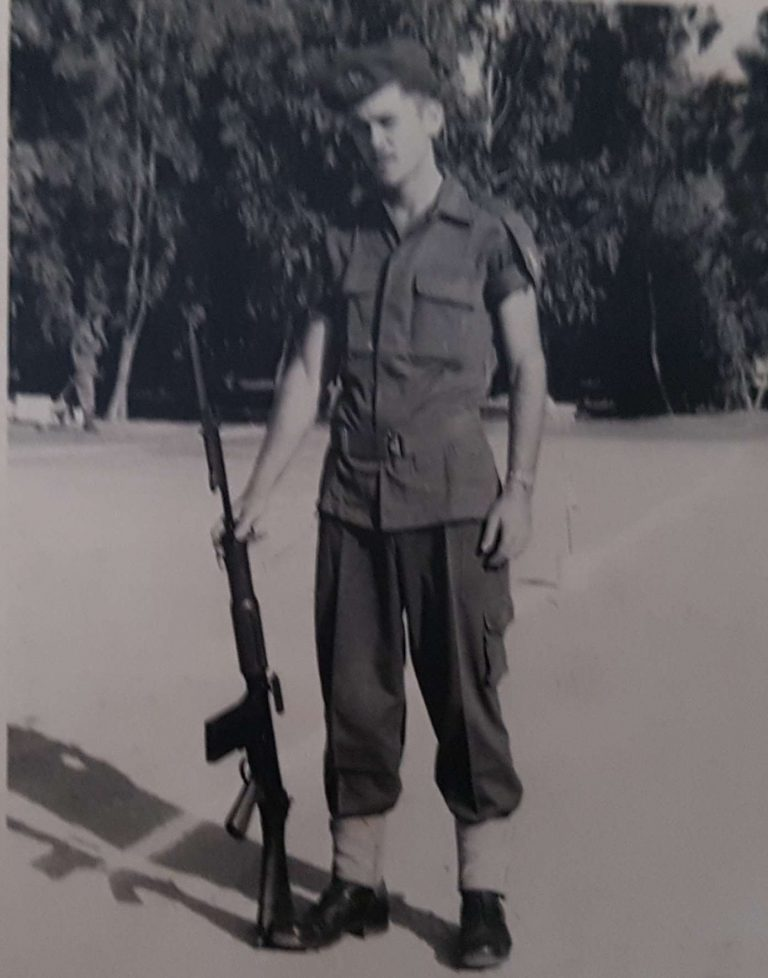
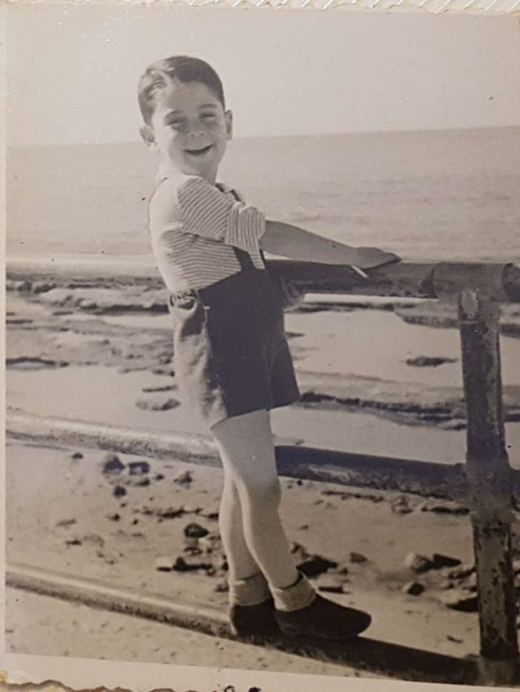
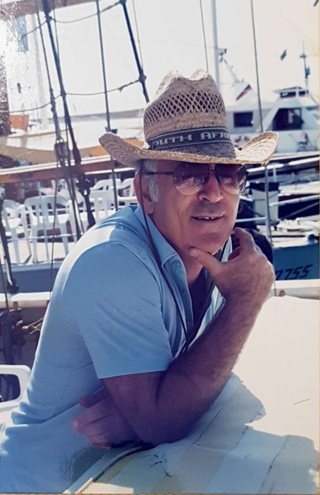

About Me
שמי יגאל נהרי ונולדתי בארץ ישראל בתל אביב בתאריך 26 לנובמבר 1939 שמי ניתן לי היות ונולדתי שבועיים לפני תחילת
מלחמת העולם השנייה בציפייה לגאולת את העם היהודי מהמלחמה.
שם משפחתי הלועזי היה ויסלוצקי וניתן על שם הנהר שגרה משפחתנו לידו ושם הנהר הוא "ויסלה" בפולין. אני בן ראשון ויש לי
אחות גדולה שהיא הבת הבכורה. אני אוהב לבלות בים בתל אביב.
בילדותי שחקנו רבות, רוב המשחקים היו משחקי חברה יחד עם חברים בשכונה: משחקי תופסת, חמור ארוך, מחבואים, קלאס וכו'.
למדתי בתל אביב בבית חינוך המאוחד ליד גן מאיר ובבית ספר מקצועי "שבח" בתל אביב.
חוויתי ילד את מלחמת העולם השנייה, מלחמת העצמאות, מלחמת קדש. השתתפתי במלחמת ששת הימים, יום כיפור ומלחמת לבנון
הראשונה. במלחמת המפרץ הראשונה כבר שוחררתי משירות בצה"ל.
מקום עבודתי הראשון היה במיכון משרדי ובמקצוע הנרכש בארץ מפעיל מכונות י.ב.מ – מקצוע זה ניתן לחיילים משוחררים ע"י
צה"ל. עבדתי כ- 30 שנה בתפקידים שונים. אני חגג את כל החגים היהודים.
עורך קבלת שבת וקידוש והדלקת נרות כל החגים חביבים עלי פרט ליום כיפור ותשעה באב בגלל הצום. במהלך השנים ביקרתי
בהרבה מדינות בעולם: ביקורי נופש, עבודה וביקורים משפחתיים.
תחביבים שלי הם טיולים בארץ ובעולם, לגדל נכדים ולהנות מהחיים. את אשתי, עליזה לבית יעקובוביץ' הכרתי בזמן השרות
בצבא. התחתנו בתל אביב בשנת 1995. שנה לאחר מכן נולדה בתנו הראשונה ובסה"כ יש לנו 3 ילדים.
My Photos




